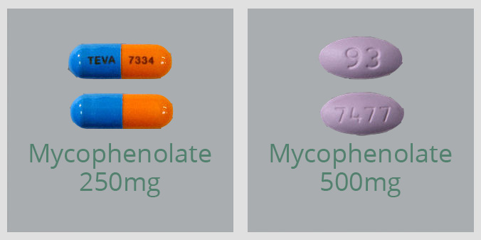

Mycophenolate
[my-ko-fen-o-late]
BRAND NAMES: NOVO-MYCOPHENOLATE®, MYFORTIC®
- • Mycophenolate Mofetil (Novo-Mycophenolate®) tablet and capsules
- • Mycophenolate Sodium (Myfortic®) tablets
- • Mycophenolate oral suspension (CellCept®)
- Mycophenolate Mofetil (Novo-Mycophenolate®):

What is this medication for?
Mycophenolate lowers your immune system in order to prevent rejection of your transplanted organ. It prevents an increase in the number of white blood cells that could attack and damage your new organ.
How should I take this medication?

Mycophenolate should be taken with food to decrease stomach upset, but may also be taken on an empty stomach. Be consistent, if you take it with food always take it with food; if you take it on an empty stomach always take it on an empty stomach.
Do not take antacids (eg: Gaviscon®, Tums®, Maalox®, Diovol®, etc) within 2 hours of mycophenolate as antacids may decrease the absorption of the medication by the body. You may take mycophenolate at the same time with stomach acid reducing medications (e.g. ranitidine (Zantac®), pantoprazole (Tecta®) etc.).
Mycophenolate can lower the number of your white blood cells, red blood cells and platelets. You may be at an increased risk for infection and bleeding.
What are some possible side effects of this medication?

Heartburn, diarrhea, nausea, vomiting
Make sure you take mycophenolate with food. Diarrhea often starts after a few months of taking mycophenolate. Notify your doctor if diarrhea persists or if it is very bothersome.

Lowered number of white blood cells, red blood cells and platelets.
Regular blood work will be done to check your blood cell counts.
Increased risk for infection.
Signs or symptoms of infection (fever or chills, cough, sore throat or pain or difficulty passing urine)

Increased risk for bleeding.
Signs of bleeding (bruising, tarry stools, vomiting of blood or blood in the urine)
Decreased red blood cells.
Signs of decreased red blood cells (weakness or tiredness, fainting spells, light-headedness)
Cancer
Taking this medication may increase your risk of skin and other cancers. Please inform your transplant team if you are diagnosed with cancer. For additional information please see section on “Cancer Risk”.